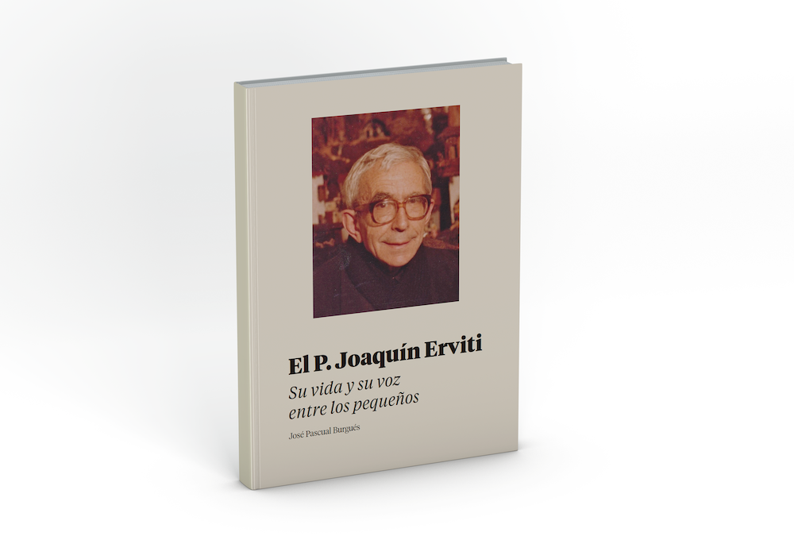

Obra Pedagógica y Didáctica

La obra principal del Padre Joaquín Erviti Lazcano destaca por su inmensa contribución a la educación infantil y a la alfabetización de los más pequeños.
Junto con el Padre Pedro Díez Gil, revolucionó la enseñanza de las primeras letras creando el método fonomímico. Este método combinaba el sonido de las letras con gestos corporales e ilustraciones visuales, haciendo que los niños aprendieran a leer y escribir de una forma alegre y vivencial.
Publicaciones y Cartillas Educativas
- Cartillas "Chiquitín": Famoso material de lectura escolar utilizado ampliamente entre 1947 y 1977 en colegios de España e Hispanoamérica.
- Enciclopedia Infantil: Adaptación de contenidos didácticos para la etapa de párvulos.
- Dibujos y letras: Cuadernos prácticos de iniciación a la escritura.
- Sonrisas: Libro de lecturas y valores infantiles.
El Padre Joaquín transformó el aula en un espacio donde se integraban armónicamente la fe, la cultura, el afecto y la pedagogía calasancia.